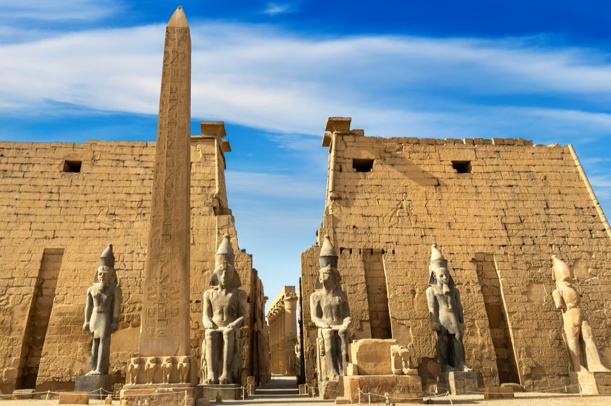
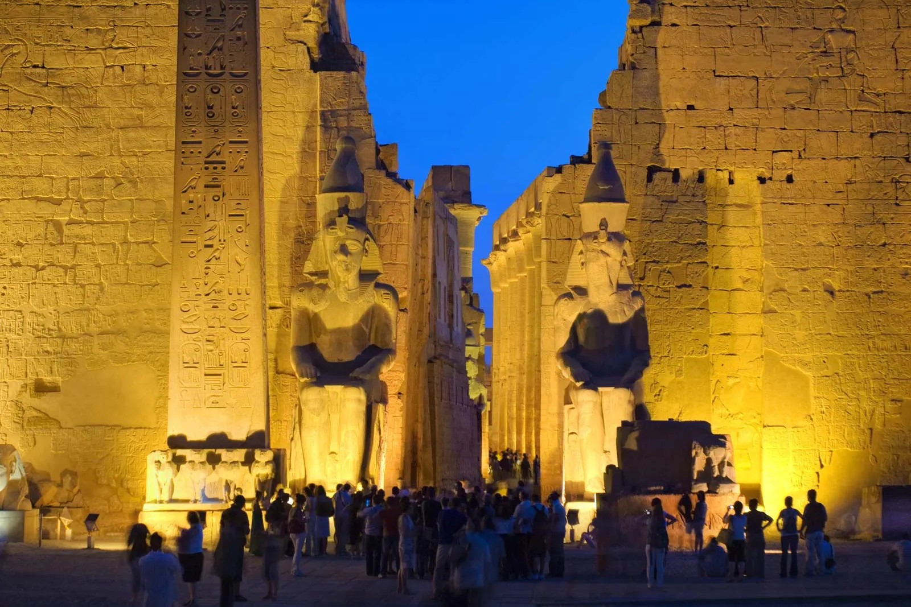
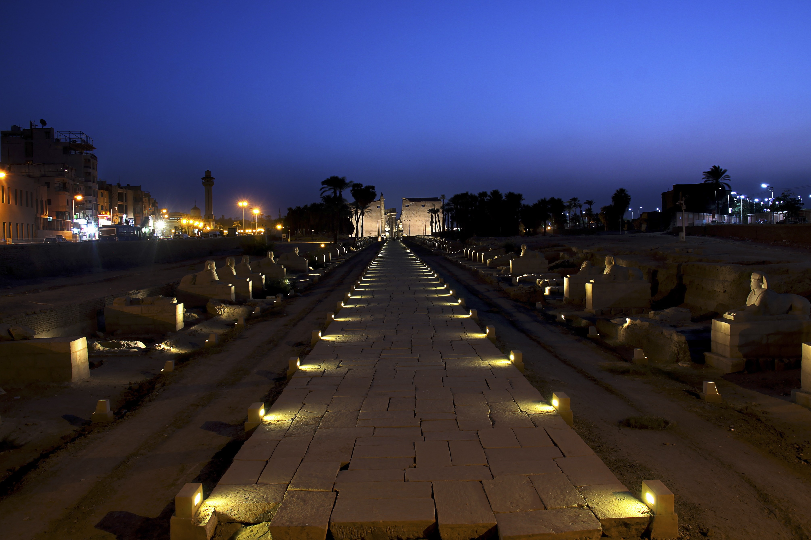

The Gayer-Anderson Museum is a dedicated art museum in Cairo, Egypt. It displays the country's rich culture and history through Islamic and Egyptian artworks and artifacts. This tour takes out throughout the museum's exterior and interior, including special areas such as the archive hall and courtyard.
Egypt
Welcome to the Egypt cultural tour. Here you will find immersive experiences of globally iconic landmarks as well as local culture.
3D Tour: Gayer-Anderson Museum
Photo Gallery: Luxor Temple



Luxor Temple is an Ancient Egyptian landmark by the Nile River that dates back to around 1400 BC. It was built to celebrate the rejuvenation of kingship, and wasn't dedicated to any specific god or king, although there are several structures attributed to kings. The temple is lit up at night, offering a beautiful view.
3D Tour: Abu Simbel Temple
The Abu Simbel Temple in the Aswan Governorate is a historic symbol of power dating back to around 1264 BC. It was built to honor the Egyption gods Amun, Ra-Horakhty, and Ptah, and the Pharaoh Rameses II and Queen Nefertari. This 3d tour takes visitors inside of the temple.
Video: Cairo Walking Tour
This video by HP Walking Tours shares a captioned walking tour of the city of Cairo, passing through many iconic locations such as the Bab El Nasr Gate, Khan Al Khalili bazaar, and Qalawun Complex.